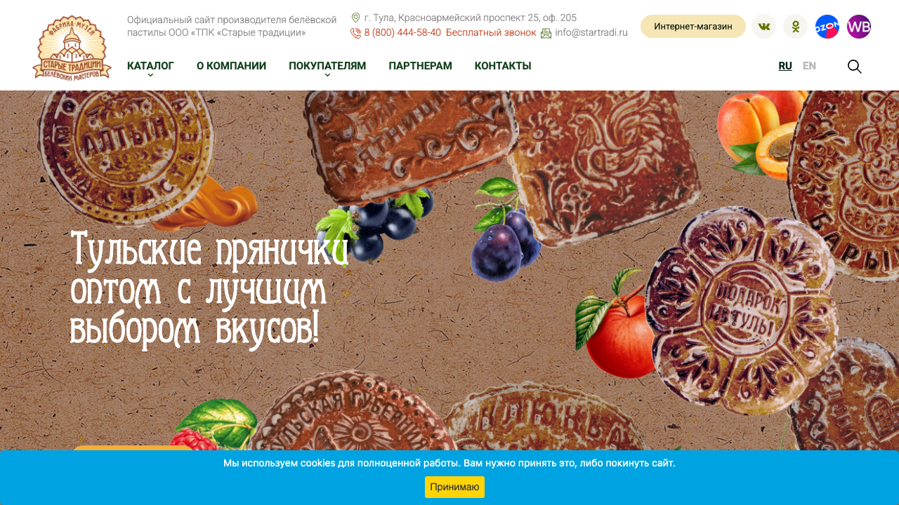
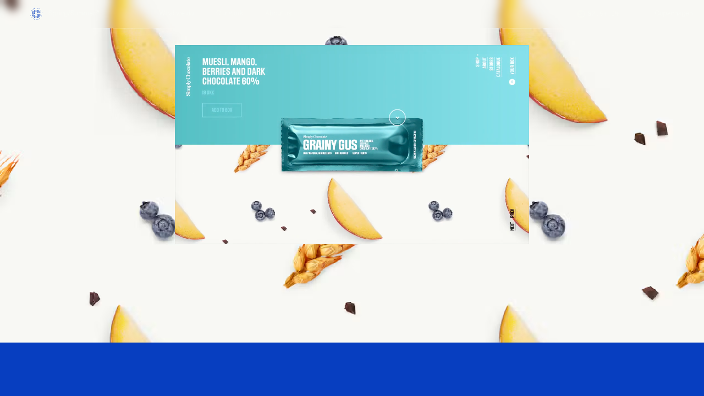
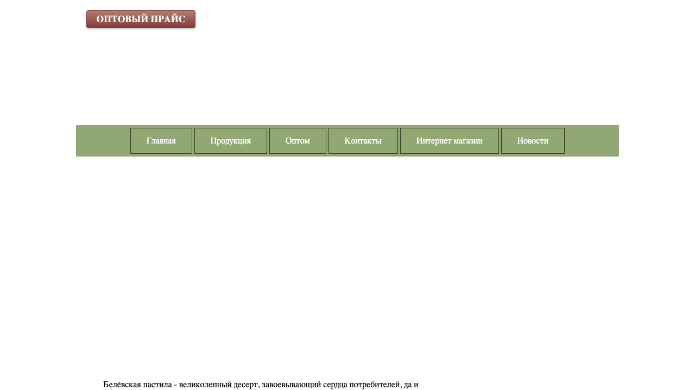
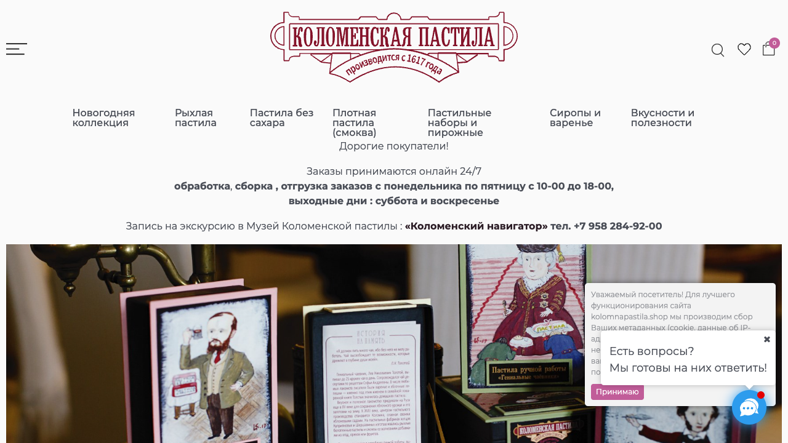
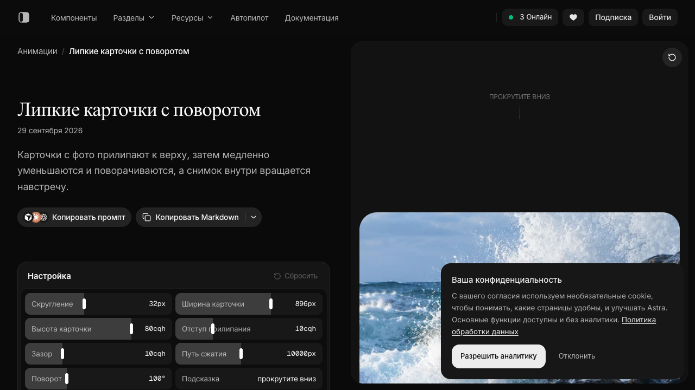

Старые традиции
Широкий ассортимент, крупные промобаннеры, отдельные входы для розницы и опта. Полезный ориентир по разделению покупательских сценариев.
Открыть сайт ↗Предлагаем сделать продукт главным событием сайта: показать фактуру, раскрыть слои, дать почувствовать разницу вкусов через цвет и движение.

В кейсе Simply Chocolate агентства Spring/Summer упаковка раскрывается, ингредиенты появляются вокруг продукта, а вкус меняет оформление. Это исторический проект 2017 года, а не описание нынешнего сайта бренда.
Для пастилы используем другой предметный жест: кусочек раскрывается на слои вслед за прокруткой. Движение объясняет продукт.
Посмотреть исходный кейс ↗
Широкий ассортимент, крупные промобаннеры, отдельные входы для розницы и опта. Полезный ориентир по разделению покупательских сценариев.
Открыть сайт ↗
Каталожная подача и заметный запрос оптового прайса. В просмотренной версии часть изображений не загрузилась, поэтому оценка визуала ограничена.
Открыть сайт ↗
Сильная подарочная история: коллекции, художественная упаковка и исторические образы. Для Белёва предлагаем собственный акцент - крупную фактуру самого продукта.
Открыть сайт ↗Собственная анимация первого экрана. Прокрутка разделяет кусочек на яблочные и ягодные слои, фон темнеет, появляются пояснения.
Новая фотография раскрывается вместе с заголовком и цветом сцены. Референс: Astra / Clip-path carousel.
Крупные фотографии накладываются друг на друга с небольшим поворотом и изменением масштаба. Референс: Astra / Sticky scroll cards.
Лёгкое смещение изображения внутри рамки при прокрутке. Референс: Astra / Parallax image.
Продукт немного поворачивается, круглые кнопки следуют за курсором. Родственный референс: Astra / Magnetic select. На сенсорном экране этот эффект отключён.
Информация о продукте открывается поверх сцены; её можно закрыть свайпом вниз. Референс: Astra / Detent drawer. В прототипе одна высота раскрытия.
В рабочей версии карточка должна вести к покупке или подтверждённому продавцу. Для партнёров нужен отдельный короткий путь: ассортимент, фасовки, условия и заявка.
Сопровождение включаем в предложение отдельной услугой: обновление ассортимента, сезонные материалы, контроль форм и исправления. Стоимость и сроки пока не согласованы.

Это демонстрация направления, а не готовый интернет-магазин. Предметные изображения созданы для концепции. Перед запуском нужны съёмка реальных продуктов, согласованный ассортимент и подключение коммерческих сценариев. Анимации написаны для прототипа; закрытый исходный код Astra не использовался. Проверка источников: 14 октября 2026.
Вернуться к живому прототипу ↗